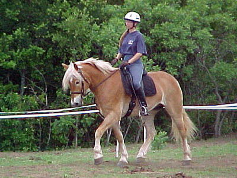

Under the new trainer, my posture has improved dramatically. (the
spurs help to keep my toes in, since I don't want to tickle Adamir accidentally...)
His mane is so much more dramatic this year.
My trainer yells like crazy when I let Adamir poke his nose out
like this during a lesson. Even in the long walk, his nose must be in to
develop the top line properly.
(can you say German school of training)
We're starting to develop a decent lengthen. Still falling on the
forehand, but it'll come.
I'm starting to get signs of softening at the canter. My trainer
says that if I can get my position better, the gait will improve.
Just a little more engagement when I remind him that I'm wearing
spurs.
Still, I don't have to grip with my lower leg now, so the toes
stay more forward, and he is more sensitive to just touching with the leg.

See, better posture. Toes forward, back straight, and shoulders
back.